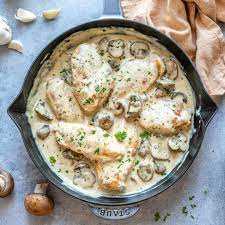

Cream of Mushroom Chicken

Description
This cream of mushroom chicken is quick, easy, and delicious. Something the whole family could enjoy.
Ingredients
- 2 tablespoons butter
- 1 can evaporated milk
- 1 can condesed cream of mushroom soup
- 1 1/4 cups water, or as needed
- 1 chopped onion
- salt and pepper to taste
- 2 pounds boneless, skinless, chicken breast halves, cubed
- 1 can sliced mushrooms, drained
Steps
- Melt butter in a large saucepan over medium heat; stir in evaporated milk, condensed soup, and water. Add onion, salt, and pepper; bring to a boil. Stir in chicken and simmer until chicken is cooked through, about 15 minutes.
- Stir in sliced mushrooms and simmer, stirring often, for 5 minutes more.